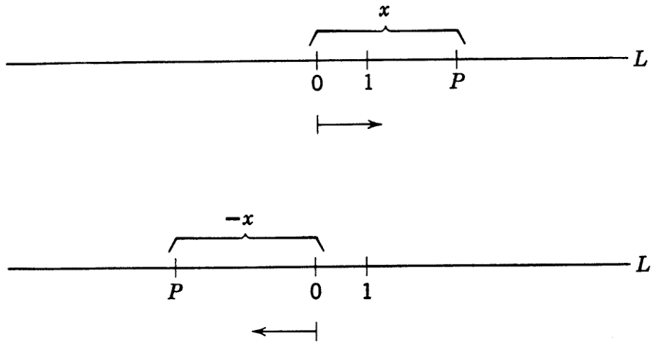
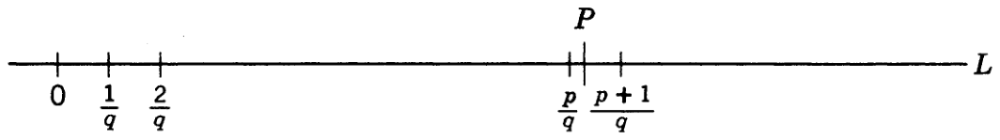
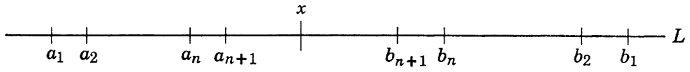
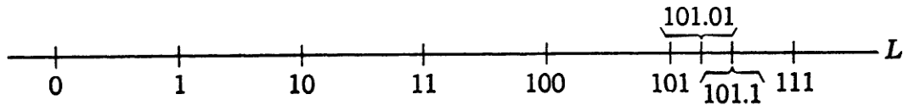
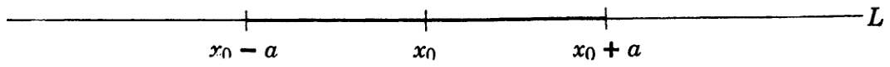
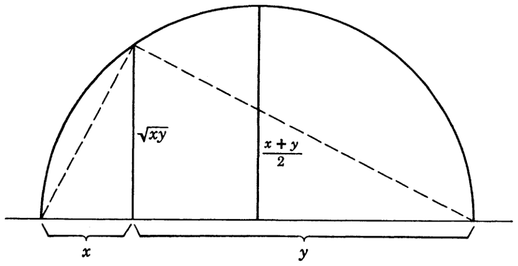

正整数，也就是自然数 1 , 2 , 3 , … 1,2,3,\ldots 1 , 2 , 3 , …
这些符号舍去了被计数对象的一切具体性质。所数的可以是人、原子、房屋，也可以是别的任何东西。
要数清一个集合中有多少个元素，自然数是合适的工具。但我们还有一个同样重要的目的，那就是度量，例如量出曲线的长度、物体的体积或重量。要问一个量“有多大”，自然数就不能直接给出答案了。我们迫切需要用数来表达测量结果，而被测的量又可以连续地变化，这就迫使我们扩展数的概念。扩展后得到的体系叫作数的连续统 ，也叫作实数系 。“实数”这个名称虽未能道出它的特点，却已为大家所接受。
从原有的数走向连续统，在直观上是如此自然，以至于过去的大数学家和科学家都径直使用它，并未深究。直到十九世纪，数学家才感到有必要为实数系寻找更扎实的逻辑基础。概念一经精确表述，又反过来推动了数学的发展。我们先从直观入手，稍后再深入分析实数系。¹
原注 1 更完整的论述见柯朗与罗宾斯合著的《什么是数学？》（牛津大学出版社，1962）。
a. 自然数系及其扩展。计数与度量
自然数与有理数。 我们把自然数序列 1 , 2 , 3 , … 1,2,3,\ldots 1 , 2 , 3 , … a + b = b + a a+b=b+a a + b = b + a a b = b a ab=ba ab = ba a + ( b + c ) = ( a + b ) + c a+(b+c)=(a+b)+c a + ( b + c ) = ( a + b ) + c a ( b c ) = ( a b ) c a(bc)=(ab)c a ( b c ) = ( ab ) c a ( b + c ) = a b + a c a(b+c)=ab+ac a ( b + c ) = ab + a c a + c = b + c a+c=b+c a + c = b + c a = b a=b a = b
逆运算减法和除法，在自然数集合里并非总能进行。从 1 1 1 2 2 2 1 1 1 2 2 2 0 0 0 有理数集 。从 1 1 1
原注 2 英文 rational 在这里并非指“合乎情理”或“合乎逻辑”；它源自 ratio ，即两个量的比。
有理数总能写成 p / q p/q p / q p p p q q q q ≠ 0 q\ne 0 q = 0 q q q p p p q q q 1 1 1
在有理数范围内，加、乘、减、除（除数为零的情形除外）都可以进行，结果仍是有理数。我们从初等算术已经知道，有理数运算遵从自然数运算的那些定律。从正整数系扩展到有理数系，是顺理成章的一步。
有理数的几何表示。 通常用一条直线 L L L 数轴 。在 L L L 0 0 0 1 1 1 0 0 0 1 1 1 L L L 1 1 1 0 0 0

图 1.1 数轴 要完全确定 L L L P P P P P P 0 0 0 0 0 0 P P P x x x 0 0 0 x x x x x x 0 0 0 − x -x − x 0 0 0 x x x x x x 绝对值 ，记作 ∣ x ∣ |x| ∣ x ∣
∣ x ∣ = { x , x ≥ 0 , − x , x < 0.
|x|=\begin{cases}
x, & x\ge 0,\\
-x, & x<0.
\end{cases}
∣ x ∣ = { x , − x , x ≥ 0 , x < 0. 可见 ∣ x ∣ |x| ∣ x ∣ x = 0 x=0 x = 0
初等几何告诉我们，用直尺和圆规可以把单位线段分成任意给定数目的等份。因此，任何有理数表示的长度都可以作图得到，代表有理数 x x x
这样，有理数便由 L L L 有理点 。和用 0 0 0 1 1 1 x x x L L L x < y x<y x < y x x x y y y y − x y-x y − x x > y x>y x > y x − y x-y x − y L L L x , y x,y x , y ∣ y − x ∣ |y-x| ∣ y − x ∣

图 1.2 设 a < b a<b a < b L L L a , b a,b a , b 区间 。端点为 0 , 1 0,1 0 , 1 单位区间 。两个端点都包括在内时，区间叫作闭区间；两个端点都不包括时，叫作开区间。开区间记作 ( a , b ) (a,b) ( a , b ) a < x < b a<x<b a < x < b x x x a a a b b b [ a , b ] [a,b] [ a , b ] a ≤ x ≤ b a\le x\le b a ≤ x ≤ b x x x b − a b-a b − a
原注 1（第 4 页） a ≤ x a\le x a ≤ x a a a x x x a < x a<x a < x a = x a=x a = x ≥ \ge ≥ ± \pm ±
与整数 0 , ± 1 , ± 2 , … 0,\pm1,\pm2,\ldots 0 , ± 1 , ± 2 , … 1 1 1 L L L q q q p / q p/q p / q 1 / q 1/q 1/ q L L L P P P p / q p/q p / q p / q p/q p / q ( p + 1 ) / q (p+1)/q ( p + 1 ) / q 1 / q 1/q 1/ q p / q p/q p / q P P P 1 / q 1/q 1/ q q q q 1 / q 1/q 1/ q q = 10 n q=10^n q = 1 0 n n n n x = p / 10 n x=p/10^n x = p /1 0 n P P P 1 / 10 n 1/10^n 1/1 0 n L L L L L L P P P
稠密性
有理点可以任意接近 L L L P P P 有理点在数轴上稠密。 显然，有理数的一些更小的子集也稠密，例如所有形如 x = p / 10 n x=p/10^n x = p /1 0 n n n n p p p
由稠密性可知，任意两个不同的有理点 a , b a,b a , b a a a b b b c = 1 2 ( a + b ) c=\tfrac12(a+b) c = 2 1 ( a + b ) a a a c c c b b b c c c a , b a,b a , b
利用有理点，可以把 L L L P P P P P P
不可公度量。 有理数尽管稠密，用数来度量的理论基础却不能止于有理数。如果两个量的比是有理数，就称它们可公度 ，因为可以为它们找到一个共同的单位，使它们分别是这个单位的整数倍。早在公元前六世纪或五世纪，希腊的数学家和哲学家就有了一个出人意料、深深震撼他们的发现：确有一些量与给定单位不可公度。特别地，有些线段的长度并非给定单位线段的有理数倍。
一个很简单的例子是，边长为 1 1 1 l l l l l l 2 2 2 l l l p / q p/q p / q p 2 = 2 q 2 p^2=2q^2 p 2 = 2 q 2 p p p q q q p 2 p^2 p 2 p p p p = 2 p ′ p=2p' p = 2 p ′ 2 p ′ 2p' 2 p ′ 4 p ′ 2 = 2 q 2 4p'^2=2q^2 4 p ′2 = 2 q 2 q 2 = 2 p ′ 2 q^2=2p'^2 q 2 = 2 p ′2 q 2 q^2 q 2 q q q p p p q q q 2 2 2 p / q p/q p / q
这是反证法的一个典型例子。它表明，符号 2 \sqrt{2} 2 π \pi π π \pi π
译者注 “稠密”回答的是能否任意逼近，“可公度”问的则是能否恰好量尽。即使每次把尺子的刻度再十等分，都能把正方形对角线夹在两个刻度之间，也不会有一次恰好把它落在有理刻度上。
无理数
有理数系不足以满足几何的需要，因而必须引进新的数来度量不可公度的量。这些新数叫作无理数 。古希腊人着眼于线段之类的几何对象，把它们看作基本元素，对于抽象的数的概念则不甚强调。他们纯用几何方法建立了一个逻辑体系，既能处理可公度（有理）的量，也能处理不可公度的量，并对它们施行运算。这项重要成就发端于毕达哥拉斯学派，经欧多克索斯大为推进，在欧几里得著名的《几何原本》中得到了详尽的阐述。
近代数学以数的概念为基石重新建立起来，并取得了长足发展。解析几何的引入，颠倒了古代数和几何量之间的主次关系。古典的不可公度量理论几乎被遗忘或搁置。对数轴上每一点，总有一个有理数或无理数与之对应；这些数全体构成的实数系，服从有理数的算术定律。人们把这一切都视为当然。直到十九世纪，才感到有必要为这些假定提供论证。戴德金在一本非凡的小册子中圆满地做到了这一点。即使今天读来，这本书仍引人入胜。¹
原注 1（第 6 页） 见 R. Dedekind，〈Nature and Meaning of Number〉，收入 Essays on Number （伦敦、芝加哥，1901）。其中第一篇〈Continuity and Irrational Numbers〉详述了实数的定义和运算法则。1964 年多佛出版社在纽约以 Essays on the Theory of Numbers 为题重印。原注所列德文书名为 Was sind und was sollen die Zahlen? （1887）。
戴德金的工作实际上表明，从费马、牛顿到高斯、黎曼，这些大数学家沿用的“朴素”做法走对了路。实数系中的数，无论理解为线段长度的符号，还是用别的方式定义，都为科学测量提供了一套自洽而完备的工具。在这一体系中，有理数的运算法则依然成立。
说到这里，径直转入微积分的实质内容也无妨。不过，后面的工作还需要对实数概念有更深的认识。为了达到这个目的，值得读一读下面的论述以及本章的补充材料。
b. 实数与区间套
暂且把直线 L L L L L L x x x 坐标 。对于这样的数 x , y x,y x , y x < y x<y x < y L L L ∣ y − x ∣ |y-x| ∣ y − x ∣ x x x y y y
一个无理数该怎样描述？对于 2 \sqrt{2} 2 π \pi π x x x x x x x x x
先用闭区间 I 1 = [ a 1 , b 1 ] I_1=[a_1,b_1] I 1 = [ a 1 , b 1 ] x x x
a 1 ≤ x ≤ b 1 ,
a_1\le x\le b_1,
a 1 ≤ x ≤ b 1 , 其中 a 1 , b 1 a_1,b_1 a 1 , b 1 I 1 I_1 I 1 x x x I 2 = [ a 2 , b 2 ] I_2=[a_2,b_2] I 2 = [ a 2 , b 2 ]
a 1 ≤ a 2 ≤ x ≤ b 2 ≤ b 1 ,
a_1\le a_2\le x\le b_2\le b_1,
a 1 ≤ a 2 ≤ x ≤ b 2 ≤ b 1 , 其中 a 2 , b 2 a_2,b_2 a 2 , b 2 I 1 I_1 I 1 x x x I 2 I_2 I 2 x x x I 2 I_2 I 2 x x x I 3 = [ a 3 , b 3 ] I_3=[a_3,b_3] I 3 = [ a 3 , b 3 ]
a 1 ≤ a 2 ≤ a 3 ≤ x ≤ b 3 ≤ b 2 ≤ b 1 ,
a_1\le a_2\le a_3\le x\le b_3\le b_2\le b_1,
a 1 ≤ a 2 ≤ a 3 ≤ x ≤ b 3 ≤ b 2 ≤ b 1 , 其中 a 3 , b 3 a_3,b_3 a 3 , b 3 I n I_n I n n n n n n n I n I_n I n

图 1.3 一个区间套 一列闭区间 I 1 , I 2 , I 3 , … I_1,I_2,I_3,\ldots I 1 , I 2 , I 3 , … 区间套 。区间套唯一地确定了点 x x x y y y I n I_n I n n n n I n I_n I n x x x y y y L L L x x x
区间套公设。 若 I 1 , I 2 , I 3 , … I_1,I_2,I_3,\ldots I 1 , I 2 , I 3 , … x x x I n I_n I n
原注 1（第 8 页） 这里的 I n I_n I n I n I_n I n 0 < x < 1 / n 0<x<1/n 0 < x < 1/ n x x x I n I_n I n
译者注 “两点终将放不进同一个小区间”只能说明公共点至多 有一个。公设所补上的一步是公共点至少 有一个。例如，用有理端点从两侧逼近 2 \sqrt{2} 2
我们将看到，这是一条连续性公理，它保证实轴上没有空隙。我们要用它来刻画实数连续统，为微积分和分析中最基本的极限运算提供依据。以后还会看到，这条公理也有许多别的表述方式。
c. 十进小数及其他进位制
无限小数。 定义实数的方法有许多种，用熟悉的无限小数来描述就是其中之一。我们完全可以把无限小数本身看作基本对象。这里还是顺着几何直观，用区间套来定义实数的无限小数表示。
用整数所对应的点把数轴分成单位区间。点 x x x c 0 c_0 c 0
c 0 ≤ x ≤ c 0 + 1 ,
c_0\le x\le c_0+1,
c 0 ≤ x ≤ c 0 + 1 , 因而 x x x I 0 = [ c 0 , c 0 + 1 ] I_0=[c_0,c_0+1] I 0 = [ c 0 , c 0 + 1 ] c 0 + 1 10 , c 0 + 2 10 , … , c 0 + 9 10 c_0+\tfrac1{10},c_0+\tfrac2{10},\ldots,c_0+\tfrac9{10} c 0 + 10 1 , c 0 + 10 2 , … , c 0 + 10 9 I 0 I_0 I 0 x x x x x x c 1 c_1 c 1 0 , 1 , 2 , … , 9 0,1,2,\ldots,9 0 , 1 , 2 , … , 9 x x x I 1 I_1 I 1
c 0 + 1 10 c 1 ≤ x ≤ c 0 + 1 10 c 1 + 1 10 .
c_0+\tfrac1{10}c_1\le x\le c_0+\tfrac1{10}c_1+\tfrac1{10}.
c 0 + 10 1 c 1 ≤ x ≤ c 0 + 10 1 c 1 + 10 1 . 再把 I 1 I_1 I 1 c 2 c_2 c 2 x x x I 2 I_2 I 2
c 0 + 1 10 c 1 + 1 100 c 2 ≤ x ≤ c 0 + 1 10 c 1 + 1 100 c 2 + 1 100 .
c_0+\tfrac1{10}c_1+\tfrac1{100}c_2\le x\le c_0+\tfrac1{10}c_1+\tfrac1{100}c_2+\tfrac1{100}.
c 0 + 10 1 c 1 + 100 1 c 2 ≤ x ≤ c 0 + 10 1 c 1 + 100 1 c 2 + 100 1 . 重复这个过程。经过 n n n x x x I n I_n I n
c 0 + 1 10 c 1 + ⋯ + 1 10 n c n ≤ x ≤ c 0 + 1 10 c 1 + ⋯ + 1 10 n c n + 1 10 n .
c_0+\frac1{10}c_1+\cdots+\frac1{10^n}c_n\le x
\le c_0+\frac1{10}c_1+\cdots+\frac1{10^n}c_n+\frac1{10^n}.
c 0 + 10 1 c 1 + ⋯ + 1 0 n 1 c n ≤ x ≤ c 0 + 10 1 c 1 + ⋯ + 1 0 n 1 c n + 1 0 n 1 . 其中 c 1 , c 2 , … c_1,c_2,\ldots c 1 , c 2 , … I n I_n I n 1 / 10 n 1/10^n 1/1 0 n n n n I n I_n I n x x x c 0 , c 1 , c 2 , … c_0,c_1,c_2,\ldots c 0 , c 1 , c 2 , … I n I_n I n c 0 , c 1 , c 2 , … c_0,c_1,c_2,\ldots c 0 , c 1 , c 2 , … x x x
x = c 0 + 0. c 1 c 2 c 3 ⋯ .
x=c_0+0.c_1c_2c_3\cdots .
x = c 0 + 0. c 1 c 2 c 3 ⋯ . 通常，c 0 c_0 c 0
同一个数可能有两种不同的十进小数表示。例如，
1 = 0.99999 ⋯ = 1.00000 ⋯ .
1=0.99999\cdots=1.00000\cdots .
1 = 0.99999 ⋯ = 1.00000 ⋯ . 在上述构造中，只要 x x x x x x c 0 c_0 c 0 x x x c 0 = x c_0=x c 0 = x c 0 = x − 1 c_0=x-1 c 0 = x − 1 c 0 c_0 c 0 x x x I 0 I_0 I 0 c 1 c_1 c 1 x x x c 0 c_0 c 0 c k c_k c k x x x x x x n n n
x = c 0 + 1 10 c 1 + ⋯ + 1 10 n c n ,
x=c_0+\frac1{10}c_1+\cdots+\frac1{10^n}c_n,
x = c 0 + 10 1 c 1 + ⋯ + 1 0 n 1 c n , 其中 c 1 , c 2 , … , c n c_1,c_2,\ldots,c_n c 1 , c 2 , … , c n c n > 0 c_n>0 c n > 0 x x x I n + 1 I_{n+1} I n + 1 [ x , x + 1 / 10 n + 1 ] [x,x+1/10^{n+1}] [ x , x + 1/1 0 n + 1 ] [ x − 1 / 10 n + 1 , x ] [x-1/10^{n+1},x] [ x − 1/1 0 n + 1 , x ] x x x I n + 2 , I n + 3 , … I_{n+2},I_{n+3},\ldots I n + 2 , I n + 3 , …
x = c 0 + 0. c 1 c 2 ⋯ c n 000 ⋯
x=c_0+0.c_1c_2\cdots c_n000\cdots
x = c 0 + 0. c 1 c 2 ⋯ c n 000 ⋯ 或
x = c 0 + 0. c 1 c 2 ⋯ ( c n − 1 ) 99999 ⋯ .
x=c_0+0.c_1c_2\cdots(c_n-1)99999\cdots .
x = c 0 + 0. c 1 c 2 ⋯ ( c n − 1 ) 99999 ⋯ . 所以，只有当 x x x 9 9 9
在实数的小数表示中，十所扮演的特殊角色纯属偶然。十进制之所以广为使用，显而易见的理由不过是人有十指，用手指逢十计数很方便。任意大于 1 1 1 p p p p p p x x x
x = c 0 + 0. c 1 c 2 c 3 ⋯ ,
x=c_0+0.c_1c_2c_3\cdots ,
x = c 0 + 0. c 1 c 2 c 3 ⋯ , 其中 c 0 c_0 c 0 c 1 , c 2 , … c_1,c_2,\ldots c 1 , c 2 , … 0 , 1 , 2 , … , p − 1 0,1,2,\ldots,p-1 0 , 1 , 2 , … , p − 1 x x x
c 0 + 1 p c 1 + ⋯ + 1 p n c n ≤ x ≤ c 0 + 1 p c 1 + ⋯ + 1 p n c n + 1 p n .
c_0+\frac1p c_1+\cdots+\frac1{p^n}c_n\le x
\le c_0+\frac1p c_1+\cdots+\frac1{p^n}c_n+\frac1{p^n}.
c 0 + p 1 c 1 + ⋯ + p n 1 c n ≤ x ≤ c 0 + p 1 c 1 + ⋯ + p n 1 c n + p n 1 . 当 x x x c 0 c_0 c 0 c 0 c_0 c 0
c 0 = d 0 + p d 1 + p 2 d 2 + ⋯ + p k d k ,
c_0=d_0+pd_1+p^2d_2+\cdots+p^kd_k,
c 0 = d 0 + p d 1 + p 2 d 2 + ⋯ + p k d k , 其中 d 0 , d 1 , … , d k d_0,d_1,\ldots,d_k d 0 , d 1 , … , d k 0 , 1 , … , p − 1 0,1,\ldots,p-1 0 , 1 , … , p − 1 x x x p p p
x = d k d k − 1 ⋯ d 1 d 0 . c 1 c 2 c 3 ⋯ .
x=d_kd_{k-1}\cdots d_1d_0.c_1c_2c_3\cdots .
x = d k d k − 1 ⋯ d 1 d 0 . c 1 c 2 c 3 ⋯ . 若 x x x − x -x − x

图 1.4 分数 21/4 的二进制表示 历史上，十以外的底数其实也曾广泛使用。例如，天文学家沿袭古巴比伦人的做法，在几个世纪里一贯使用底数 p = 60 p=60 p = 60
二进制表示。 以 p = 2 p=2 p = 2 21 4 \tfrac{21}{4} 4 21 101.01 101.01 101.01
21 4 = 2 2 ⋅ 1 + 2 1 ⋅ 0 + 1 ⋅ 1 + 1 2 ⋅ 0 + 1 2 2 ⋅ 1
\frac{21}{4}=2^2\cdot1+2^1\cdot0+1\cdot1+\frac12\cdot0+\frac1{2^2}\cdot1
4 21 = 2 2 ⋅ 1 + 2 1 ⋅ 0 + 1 ⋅ 1 + 2 1 ⋅ 0 + 2 2 1 ⋅ 1 （见图 1.4）。
实数的运算。 实数的定义以及它们的无限十进制、二进制等表示并不难懂。可是，为什么能够像对有理数那样对整个数的连续统实行四则运算，并且仍然保有结合律、交换律、分配律等算术定律，却未必一望即知。证明是简单的，只是有些繁琐。为了早一点接触分析中生动的实质问题，我们暂且承认可以对实数实行通常的算术运算。等到认识了极限的思想及其含义之后，就能更深入地理解数的概念所依据的逻辑结构（见本章补充材料，第 89 页）。
d. 邻域的定义
实数的四则运算遵从有理数的规则，它们的顺序关系，也就是不等关系，同样如此。
一对满足 a < b a<b a < b a , b a,b a , b [ a , b ] [a,b] [ a , b ] a ≤ x ≤ b a\le x\le b a ≤ x ≤ b ( a , b ) (a,b) ( a , b ) a < x < b a<x<b a < x < b x 0 x_0 x 0 邻域 。确切地说，给定任意正数 ε \varepsilon ε x 0 x_0 x 0 ε \varepsilon ε x 0 − ε < x < x 0 + ε x_0-\varepsilon<x<x_0+\varepsilon x 0 − ε < x < x 0 + ε x x x ( x 0 − ε , x 0 + ε ) (x_0-\varepsilon,x_0+\varepsilon) ( x 0 − ε , x 0 + ε ) x 0 x_0 x 0 ( a , b ) (a,b) ( a , b ) x 0 x_0 x 0
既已定义了实端点区间，我们也可用有理端点时的同一定义来构造区间套。任意一个实端点区间套，都有某个实数同时属于它的所有区间。这一点对于微积分的逻辑自洽至关重要（见补充材料，第 95 页）。
e. 不等式
基本法则
不等式在高等数学中的作用，远比在初等数学中大。有时要准确求出一个量 x x x 估计 却比较容易，也就是证明 x x x a a a b b b
基本事实是，两个正实数的和与积仍然为正。也就是说，若 a > 0 a>0 a > 0 b > 0 b>0 b > 0 a + b > 0 a+b>0 a + b > 0 a b > 0 ab>0 ab > 0 a > b a>b a > b a − b > 0 a-b>0 a − b > 0 a > b a>b a > b c > d c>d c > d a + c > b + d a+c>b+d a + c > b + d
( a + c ) − ( b + d ) = ( a − b ) + ( c − d )
(a+c)-(b+d)=(a-b)+(c-d)
( a + c ) − ( b + d ) = ( a − b ) + ( c − d ) 是两个正数之和，仍为正。（却不能把这两个不等式相减，得到 a − c > b − d a-c>b-d a − c > b − d a > b a>b a > b c > 0 c>0 c > 0 a c > b c ac>bc a c > b c
a c − b c = ( a − b ) c
ac-bc=(a-b)c
a c − b c = ( a − b ) c 是两个正数之积，因而为正。若 c c c a > b a>b a > b a c < b c ac<bc a c < b c a > b > 0 a>b>0 a > b > 0 c > d > 0 c>d>0 c > d > 0 a c > b d ac>bd a c > b d
从几何上看，不等关系的传递性是显然的。也就是说，若 a > b a>b a > b b > c b>c b > c a > c a>c a > c
( a − b ) + ( b − c ) = a − c .
(a-b)+(b-c)=a-c.
( a − b ) + ( b − c ) = a − c . 上面的法则，在各处把符号 > > > ≥ \ge ≥
原注 1（第 13 页） 有了传递性，才能用连写的式子 a < b < c ⋯ a<b<c\cdots a < b < c ⋯ a < b a<b a < b b < c b<c b < c x < y > z x<y>z x < y > z
设 a , b a,b a , b
a 2 − b 2 = ( a + b ) ( a − b ) .
a^2-b^2=(a+b)(a-b).
a 2 − b 2 = ( a + b ) ( a − b ) . 由于 a + b a+b a + b a > b a>b a > b a 2 > b 2 a^2>b^2 a 2 > b 2 a ≥ b ≥ 0 a\ge b\ge0 a ≥ b ≥ 0 a 2 ≥ b 2 a^2\ge b^2 a 2 ≥ b 2 a , b a,b a , b
a − b = 1 a + b ( a 2 − b 2 )
a-b=\frac1{a+b}(a^2-b^2)
a − b = a + b 1 ( a 2 − b 2 ) 均成立，可见反过来也对：若 a , b a,b a , b a 2 > b 2 a^2>b^2 a 2 > b 2 a > b a>b a > b x , y x,y x , y a = x a=\sqrt{x} a = x b = y b=\sqrt{y} b = y x > y x>y x > y x > y \sqrt{x}>\sqrt{y} x > y x ≥ y ≥ 0 x\ge y\ge 0 x ≥ y ≥ 0 x ≥ y \sqrt{x}\ge\sqrt{y} x ≥ y
原注 2（第 13 页） 这里以及下文中，若 z ≥ 0 z\ge0 z ≥ 0 z \sqrt z z z z z c c c ∣ c ∣ = c 2 |c|=\sqrt{c^2} ∣ c ∣ = c 2 ∣ c ∣ ≥ 0 |c|\ge0 ∣ c ∣ ≥ 0 ∣ c ∣ 2 = c 2 |c|^2=c^2 ∣ c ∣ 2 = c 2 ∣ x y ∣ = ∣ x ∣ ⋅ ∣ y ∣ |xy|=|x|\cdot|y| ∣ x y ∣ = ∣ x ∣ ⋅ ∣ y ∣ ∣ x y ∣ 2 = ( x y ) 2 = x 2 y 2 = ( ∣ x ∣ ⋅ ∣ y ∣ ) 2 |xy|^2=(xy)^2=x^2y^2=(|x|\cdot|y|)^2 ∣ x y ∣ 2 = ( x y ) 2 = x 2 y 2 = ( ∣ x ∣ ⋅ ∣ y ∣ ) 2
再设 a , b a,b a , b n n n
a n − b n = ( a − b ) ( a n − 1 + a n − 2 b + ⋯ + b n − 1 )
a^n-b^n=(a-b)(a^{n-1}+a^{n-2}b+\cdots+b^{n-1})
a n − b n = ( a − b ) ( a n − 1 + a n − 2 b + ⋯ + b n − 1 ) 中，第二个因子为正，所以 a n − b n a^n-b^n a n − b n a − b a-b a − b a n > b n a^n>b^n a n > b n a > b a>b a > b a n < b n a^n<b^n a n < b n a < b a<b a < b
往后遇到的不等式，多半是对某个数的绝对值作估计。回忆 ∣ x ∣ |x| ∣ x ∣ x ≥ 0 x\ge0 x ≥ 0 x x x x < 0 x<0 x < 0 − x -x − x x x x ∣ x ∣ |x| ∣ x ∣ x x x − x -x − x x x x ∣ x ∣ ≤ a |x|\le a ∣ x ∣ ≤ a x x x − x -x − x a a a x ≤ a x\le a x ≤ a − x ≤ a -x\le a − x ≤ a x ≥ − a x\ge-a x ≥ − a ∣ x ∣ ≤ a |x|\le a ∣ x ∣ ≤ a x x x 0 0 0 2 a 2a 2 a − a ≤ x ≤ a -a\le x\le a − a ≤ x ≤ a

图 1.5 区间 |x − x₀| ≤ a 不等式 ∣ x − x 0 ∣ ≤ a |x-x_0|\le a ∣ x − x 0 ∣ ≤ a − a ≤ x − x 0 ≤ a -a\le x-x_0\le a − a ≤ x − x 0 ≤ a x 0 − a ≤ x ≤ x 0 + a x_0-a\le x\le x_0+a x 0 − a ≤ x ≤ x 0 + a x x x x 0 x_0 x 0 2 a 2a 2 a x 0 x_0 x 0 ε \varepsilon ε ( x 0 − ε , x 0 + ε ) (x_0-\varepsilon,x_0+\varepsilon) ( x 0 − ε , x 0 + ε ) x 0 − ε < x < x 0 + ε x_0-\varepsilon<x<x_0+\varepsilon x 0 − ε < x < x 0 + ε ∣ x − x 0 ∣ < ε |x-x_0|<\varepsilon ∣ x − x 0 ∣ < ε
三角不等式
涉及绝对值的最重要的不等式之一，是对任意实数 a , b a,b a , b 三角不等式
∣ a + b ∣ ≤ ∣ a ∣ + ∣ b ∣ .
|a+b|\le |a|+|b|.
∣ a + b ∣ ≤ ∣ a ∣ + ∣ b ∣. 把它写成下面这个等价的形式，“三角不等式”这一名称便更容易理解：
∣ α − β ∣ ≤ ∣ α − γ ∣ + ∣ γ − β ∣ .
|\alpha-\beta|\le|\alpha-\gamma|+|\gamma-\beta|.
∣ α − β ∣ ≤ ∣ α − γ ∣ + ∣ γ − β ∣. 这里取了 a = α − γ a=\alpha-\gamma a = α − γ b = γ − β b=\gamma-\beta b = γ − β α \alpha α β \beta β γ \gamma γ
三角不等式也很容易用代数证明。分别考虑 a + b ≥ 0 a+b\ge0 a + b ≥ 0 a + b < 0 a+b<0 a + b < 0 a + b ≤ ∣ a ∣ + ∣ b ∣ a+b\le|a|+|b| a + b ≤ ∣ a ∣ + ∣ b ∣ a ≤ ∣ a ∣ a\le|a| a ≤ ∣ a ∣ b ≤ ∣ b ∣ b\le|b| b ≤ ∣ b ∣ − ( a + b ) ≤ ∣ a ∣ + ∣ b ∣ -(a+b)\le|a|+|b| − ( a + b ) ≤ ∣ a ∣ + ∣ b ∣ − a ≤ ∣ a ∣ -a\le|a| − a ≤ ∣ a ∣ − b ≤ ∣ b ∣ -b\le|b| − b ≤ ∣ b ∣
三个量的类似不等式立刻随之而来：
∣ a + b + c ∣ ≤ ∣ a ∣ + ∣ b ∣ + ∣ c ∣ .
|a+b+c|\le|a|+|b|+|c|.
∣ a + b + c ∣ ≤ ∣ a ∣ + ∣ b ∣ + ∣ c ∣. 这是因为，接连两次应用三角不等式，就有
∣ a + b + c ∣ = ∣ ( a + b ) + c ∣ ≤ ∣ a + b ∣ + ∣ c ∣ ≤ ∣ a ∣ + ∣ b ∣ + ∣ c ∣ .
|a+b+c|=|(a+b)+c|\le|a+b|+|c|\le|a|+|b|+|c|.
∣ a + b + c ∣ = ∣ ( a + b ) + c ∣ ≤ ∣ a + b ∣ + ∣ c ∣ ≤ ∣ a ∣ + ∣ b ∣ + ∣ c ∣. 同样可以得到更一般的不等式
∣ a 1 + a 2 + ⋯ + a n ∣ ≤ ∣ a 1 ∣ + ∣ a 2 ∣ + ⋯ + ∣ a n ∣ .
|a_1+a_2+\cdots+a_n|\le|a_1|+|a_2|+\cdots+|a_n|.
∣ a 1 + a 2 + ⋯ + a n ∣ ≤ ∣ a 1 ∣ + ∣ a 2 ∣ + ⋯ + ∣ a n ∣. 有时还需要从下方估计 ∣ a + b ∣ |a+b| ∣ a + b ∣
∣ a ∣ = ∣ ( a + b ) + ( − b ) ∣ ≤ ∣ a + b ∣ + ∣ − b ∣ = ∣ a + b ∣ + ∣ b ∣ ,
|a|=|(a+b)+(-b)|\le|a+b|+|-b|=|a+b|+|b|,
∣ a ∣ = ∣ ( a + b ) + ( − b ) ∣ ≤ ∣ a + b ∣ + ∣ − b ∣ = ∣ a + b ∣ + ∣ b ∣ , 就得到不等式
∣ a + b ∣ ≥ ∣ a ∣ − ∣ b ∣ .
|a+b|\ge|a|-|b|.
∣ a + b ∣ ≥ ∣ a ∣ − ∣ b ∣. 柯西–施瓦茨不等式
实数的平方永不为负，所以若干个平方之和也永不为负。有些极为重要的不等式，正是利用了这个简单的事实。用这种办法得到的结果中，最常用的当数柯西–施瓦茨不等式 ：
( a 1 b 1 + a 2 b 2 + ⋯ + a n b n ) 2 ≤ ( a 1 2 + a 2 2 + ⋯ + a n 2 ) ( b 1 2 + b 2 2 + ⋯ + b n 2 ) .
(a_1b_1+a_2b_2+\cdots+a_nb_n)^2
\le(a_1^2+a_2^2+\cdots+a_n^2)(b_1^2+b_2^2+\cdots+b_n^2).
( a 1 b 1 + a 2 b 2 + ⋯ + a n b n ) 2 ≤ ( a 1 2 + a 2 2 + ⋯ + a n 2 ) ( b 1 2 + b 2 2 + ⋯ + b n 2 ) . 记
A = a 1 2 + a 2 2 + ⋯ + a n 2 , B = a 1 b 1 + a 2 b 2 + ⋯ + a n b n , C = b 1 2 + b 2 2 + ⋯ + b n 2 .
\begin{aligned}
A&=a_1^2+a_2^2+\cdots+a_n^2,\\
B&=a_1b_1+a_2b_2+\cdots+a_nb_n,\\
C&=b_1^2+b_2^2+\cdots+b_n^2.
\end{aligned}
A B C = a 1 2 + a 2 2 + ⋯ + a n 2 , = a 1 b 1 + a 2 b 2 + ⋯ + a n b n , = b 1 2 + b 2 2 + ⋯ + b n 2 . 所要证明的就是 A C ≥ B 2 AC\ge B^2 A C ≥ B 2 t t t
0 ≤ ( a 1 + t b 1 ) 2 + ( a 2 + t b 2 ) 2 + ⋯ + ( a n + t b n ) 2 .
0\le(a_1+tb_1)^2+(a_2+tb_2)^2+\cdots+(a_n+tb_n)^2.
0 ≤ ( a 1 + t b 1 ) 2 + ( a 2 + t b 2 ) 2 + ⋯ + ( a n + t b n ) 2 . 把各项展开，再按 t t t
0 ≤ A + 2 B t + C t 2 .
0\le A+2Bt+Ct^2.
0 ≤ A + 2 Bt + C t 2 . 此式对一切 t t t A , B , C A,B,C A , B , C C ≥ 0 C\ge0 C ≥ 0 C = 0 C=0 C = 0 B 2 = A C = 0 B^2=AC=0 B 2 = A C = 0 C > 0 C>0 C > 0 t = − B / C t=-B/C t = − B / C
A + 2 B t + C t 2 = C ( t + B C ) 2 + ( A − B 2 C )
A+2Bt+Ct^2=C\left(t+\frac BC\right)^2+\left(A-\frac{B^2}{C}\right)
A + 2 Bt + C t 2 = C ( t + C B ) 2 + ( A − C B 2 ) 达到最小值。代入可得
0 ≤ A − 2 B 2 C + B 2 C = A C − B 2 C ,
0\le A-\frac{2B^2}{C}+\frac{B^2}{C}=\frac{AC-B^2}{C},
0 ≤ A − C 2 B 2 + C B 2 = C A C − B 2 , 从而 A C − B 2 ≥ 0 AC-B^2\ge0 A C − B 2 ≥ 0
译者注 引入 t t t t t t t = − B / C t=-B/C t = − B / C t t t

图 1.6 两个正数的几何平均与算术平均 在 n = 2 n=2 n = 2
a 1 = x , a 2 = y , b 1 = y , b 2 = x ,
a_1=\sqrt{x},\qquad a_2=\sqrt{y},\qquad b_1=\sqrt{y},\qquad b_2=\sqrt{x},
a 1 = x , a 2 = y , b 1 = y , b 2 = x , 其中 x , y x,y x , y ( 2 x y ) 2 ≤ ( x + y ) 2 (2\sqrt{xy})^2\le(x+y)^2 ( 2 x y ) 2 ≤ ( x + y ) 2
x y ≤ x + y 2 .
\sqrt{xy}\le\frac{x+y}{2}.
x y ≤ 2 x + y . 这表明，两个正数 x , y x,y x , y 几何平均数 x y \sqrt{xy} x y 算术平均数 ( x + y ) / 2 (x+y)/2 ( x + y ) /2 x x x y y y x x x y y y
原注 1（第 17 页） 有兴趣的读者可参看 E. F. Beckenbach 与 R. Bellman 合著的 An Introduction to Inequalities ，以及 N. Kazarinoff 的 Geometric Inequalities ，两书均由兰登书屋于 1961 年出版。